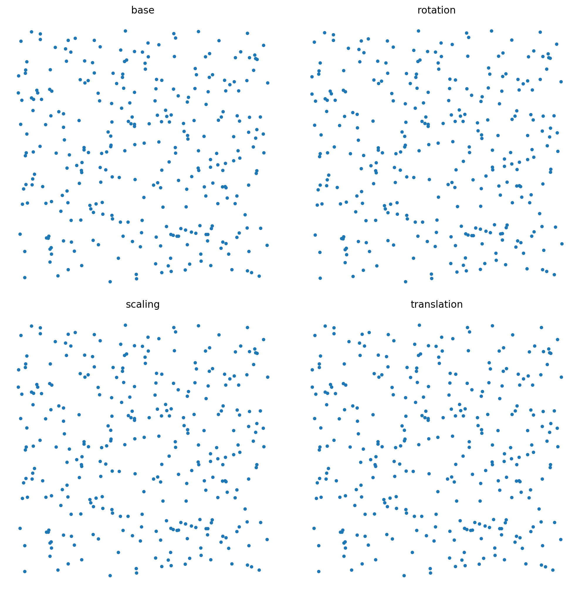

Transformation Methods#
rotation(angle, degree=True)#
Applies a 2D rotation to the set of points around the origin (0,0).
This method rotates points counter-clockwise by a given angle θ. The transformation uses a 2D rotation matrix:
For each point P_i = (x_i, y_i), the rotated point \(P'_i = (x'_i, y'_i)\) is:
\(x'_{i} = x_{i} cos(θ) - y_{i} sin(θ)\)
\(y'_{i} = x_{i} sin(θ) + y_{i} cos(θ)\)
Parameters#
angle (float): The angle of rotation.
degree (bool, optional): If True (default), the angle is interpreted as degrees. If False, the angle is in radians.
Returns#
SetPoints: A new SetPoints object containing the rotated points.
Raises#
ValueError: If the dimension of the points is not 2.
Example#
from proximitygraphs.points import SetPoints
# Create a grid
grid = SetPoints.grid(shape=(5, 5))
# Rotate by 45 degrees
rotated = grid.rotation(45, degree=True)
rotated.draw(figsize=(8, 8), v_color='red')
# Rotate by π/4 radians
import numpy as np
rotated_rad = grid.rotation(np.pi/4, degree=False)
scaling(scale)#
Applies a scaling transformation to the set of points, relative to the origin.
This method scales the coordinates of each point. The scaling can be uniform across all dimensions (if scale is a scalar) or different for each dimension (if scale is a vector).
Mechanism#
The transformation is \(P' = P @ M\), where M is a diagonal matrix:
If scale is scalar s: M = s × I (identity matrix). Each coordinate is multiplied by s.
If scale is vector (s_0, s_1, …, s_{dim-1}): \(M = \begin{bmatrix} s_0 & 0 & \cdots & 0 \\ 0 & s_1 & \cdots & 0 \\ \vdots & \vdots & \ddots & \vdots \\ 0 & 0 & \cdots & s_{dim-1} \end{bmatrix}\)
Each coordinate j is multiplied by s_j.
Parameters#
scale (float or array-like): The scaling factor(s).
If scalar (float): All dimensions are scaled by this factor.
If array-like (list, tuple, numpy.ndarray) of length dim: Each dimension is scaled by the corresponding element.
Returns#
SetPoints: A new SetPoints object containing the scaled points.
Raises#
ValueError: If scale is an array-like and its shape is not (dim,).
Example#
from proximitygraphs.points import SetPoints
# Create uniform square
points = SetPoints.uniform_square(n=100, seed=1)
# Uniform scaling (double all coordinates)
scaled_uniform = points.scaling(2.0)
# Non-uniform scaling (stretch x by 3, y by 0.5)
scaled_nonuniform = points.scaling([3.0, 0.5])
scaled_nonuniform.draw(figsize=(8, 8), v_color='green')
traslation(c)#
Applies a translation to the set of points.
This method shifts all points by a given vector c. The transformation is \(P' = P + c\).
For each point P_i, the new point \(P'_i = P_i + c\).
If c is a scalar, it is treated as a vector where all components equal c.
Parameters#
c (float or array-like): The translation vector or scalar.
If scalar (float): All dimensions are translated by this value.
If array-like (list, tuple, numpy.ndarray) of length dim: Each dimension j is translated by c_j.
Returns#
SetPoints: A new SetPoints object containing the translated points.
Raises#
ValueError: If c is an array-like and its shape is not (dim,).
Example#
from proximitygraphs.points import SetPoints
# Create points centered at origin
points = SetPoints.normal_dist(n=100, seed=1)
# Translate by scalar (shift all coordinates by 5)
translated = points.traslation(5.0)
# Translate by vector (shift x by 3, y by -2)
translated_vec = points.traslation([3.0, -2.0])
translated_vec.draw(figsize=(8, 8), v_color='purple')
perturb(radius)#
Applies a random perturbation to each point in the set.
Each point p is moved to p’ = p + v, where v is a random perturbation vector uniformly distributed within a dim-dimensional sphere of the given radius centered at the origin.
Mechanism#
For each point, generate a perturbation vector:
Direction: Sample a random direction uniformly on the surface of a dim-dimensional unit sphere using normalized standard normal variates.
Magnitude: Generate a scalar s_i = U_i^(1/dim), where U_i ~ Uniform(0, radius). This ensures proper volumetric distribution within the sphere.
Perturbation: v_i = s_i × (unit direction vector).
Parameters#
radius (float): The maximum radius for the perturbation. Must be positive.
Returns#
SetPoints: A new SetPoints object containing the perturbed points.
Raises#
ValueError: If radius is not positive.
Example#
from proximitygraphs.points import SetPoints
# Create a regular grid
grid = SetPoints.grid(shape=(10, 10))
# Add small random perturbations
perturbed = grid.perturb(radius=0.2)
perturbed.draw(figsize=(8, 8), v_color='orange', v_size=20)
# Create uniformly perturbed version
points = SetPoints.uniform_square(n=50, seed=1)
noisy = points.perturb(radius=0.1)
Special Methods#
__add__(other)#
Combines two SetPoints objects by concatenating their points.
Parameters#
other (SetPoints): Another SetPoints object to combine with.
Returns#
SetPoints: A new SetPoints object containing points from both sets.
Example#
from proximitygraphs.points import SetPoints
# Create two point sets
points1 = SetPoints.uniform_square(n=50, seed=1)
points2 = SetPoints.uniform_sphere(n=50, seed=2)
# Combine them
combined = points1 + points2
print(f"Combined set has {combined.n} points") # 100 points
Example#
import numpy as np
import matplotlib.pyplot as plt
import proximitygraphs as pg
base = pg.SetPoints.uniform_square(n=300, seed=7)
rot = base.rotation(theta=np.pi/6)
scl = base.scaling(scale=1.5)
trn = base.traslation(shift=(0.4, 0.2))
fig, axes = plt.subplots(2, 2, figsize=(10, 10), constrained_layout=True)
for ax, (name, pts) in zip(
axes.flat,
[
("base", base),
("rotation", rot),
("scaling", scl),
("translation", trn),
],
):
p = pts.points
ax.scatter(p[:, 0], p[:, 1], s=10)
ax.set_title(name)
ax.set_aspect("equal")
ax.axis("off")
fig.savefig(pi=200, bbox_inches="tight")
